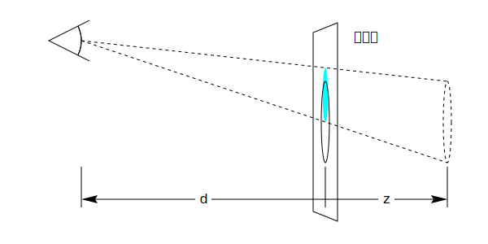
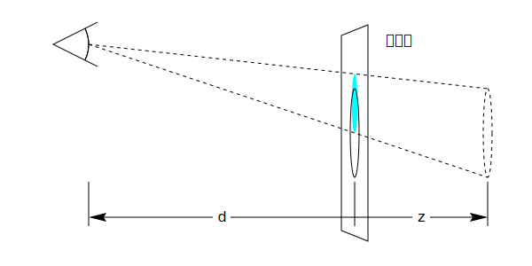

CSS Transform （変形, 変換（座標系変換））は、要素を~2Dや~3D空間~内で変形するように~CSSで~style付けることを可能にする。
◎
CSS transforms allows elements styled with CSS to be transformed in two-dimensional or three-dimensional space.
この仕様は、~3D変形~用の新たな［
変形~関数／~prop
］, および 単純な変形~用の便利~関数を追加する。
◎
This spec add new tranform functions and properties for three-dimensional transforms, and convenience functions for simple transforms.
この仕様は、 `css-transforms-1$r を拡張する差分~仕様であり，作者が要素を~3D空間~内で変形できるようにする。
`transform$p ~prop用の新たな`~3D変形関数$により，~3D変形が可能になる。
加えて，~3D変形の操作をより容易にするための追加の~propもあり、作者は，入子にされた~3D変形の~~作用についての制御も可能になる。
◎
This specification is a delta spec that extends [css-transforms-1] to allow authors to transform elements in three-dimensional space. New transform functions for the transform property allow three-dimensional transforms, and additional properties make working with three-dimensional transforms easier, and allow the author to control how nested three-dimensional transformed elements interact.
`perspective$p ~propにより、~3D変形を伴う一連の子~要素を，共通の~3D空間に属しているかのように現れさせられる。
`perspective-origin$p ~propは、遠近法が適用される原点についての制御を提供し，それにより実質的な “消失点” の位置を変えられる。
◎
The perspective property allows the author to make child elements with three-dimensional transforms appear as if they live in a common three-dimensional space. The perspective-origin property provides control over the origin at which perspective is applied, effectively changing the location of the "vanishing point".
`transform-style$p ~propは、~3D変形されたいくつかの要素とその~3D変形された子孫たちを，同じ~3D空間に共存させ、~3D~obj階層の構築を可能にする。
◎
The transform-style property allows 3D-transformed elements and their 3D-transformed descendants to share a common three-dimensional space, allowing the construction of hierarchies of three-dimensional objects.
`backface-visibility$p ~propは、要素が，その裏側が`視点$から可視になるように，~3D変形を通して反転されているときに、効力を発揮する。
その種の要素は，隠される方が望ましい状況もあるが、この~propに対する値 `hidden^v の利用が，それを可能にする。
◎
The backface-visibility property comes into play when an element is flipped around via three-dimensional transforms such that its reverse side is visible to the viewer. In some situations it is desirable to hide the element in this situation, which is possible using the value of hidden for this property.
注記：
`transform$p ~propの一部の値は，要素を ~3D座標系において変形させるが、その要素~自身は~3D~objにはされない。
それらは~2D平面~内に存在し，奥行きを持たない。
◎
Note: While some values of the transform property allow an element to be transformed in a three-dimensional coordinate system, the elements themselves are not three-dimensional objects. Instead, they exist on a two-dimensional plane (a flat surface) and have no depth.
この仕様はまた、単純な変形を より容易に記述したり，~animateできるようにするための 3 個の便利~prop
`scale$p, `translate$p, `rotate$p
も追加する。
◎
This specification also adds three convenience properties, scale, translate and rotate, that make it easier to describe and animate simple transforms.
1.1. ~module間の相互作用
ここでの`~3D変形関数$は、 `transform$p ~propがとり得る関数の集合を拡張する。
◎
The 3D transform functions here extend the set of functions for the transform property.
［
`perspective$p ／ `transform-style$p ／ `backface-visibility$p
］に対する 一部の値に対しては、`包含塊$や`積層~文脈$が作成される。
◎
Some values of perspective, transform-style and backface-visibility result in the creation of a containing block, and/or the creation of a stacking context.
~3D変形は，要素の視覚的な積層順に影響し、
`CSS21$r の
付録 E
に述べられている，奥から手前にかけての塗り順序を上書きする。
◎
Three-dimensional transforms affect the visual layering of elements, and thus override the back-to-front painting order described in Appendix E of [CSS21].
2. 各種用語
`~3D変形要素@
◎
3D-transformed element
`transform$p ~propの算出値に `~3D変形関数$を伴う要素。
◎
An element whose computed value for the transform property includes one of the 3D transform functions
`~3D行列@
◎
3D matrix
`~2D行列$の要件を満たさない~4x4行列。
◎
A 4x4 matrix which does not fulfill the requirements of an <<2D matrix>>.
◎
In addition to the identity transform function in CSS Transforms, examples for identity transform functions include translate3d(0, 0, 0), translateZ(0), scaleZ(1), rotate3d(1, 1, 1, 0), rotateX(0), rotateY(0), rotateZ(0) and matrix3d(1, 0, 0, 0, 0, 1, 0, 0, 0, 0, 1, 0, 0, 0, 0, 1). A special case is perspective: perspective(infinity). The value of m34 becomes infinitesimal small and the transform function is therefore assumed to be equal to the identity matrix.
`~3D描画~文脈
◎
3D rendering context
`perspective$p, `perspective-origin$p
~propの値から，
後述の様に
算出される行列。
◎
A matrix computed from the values of the perspective and perspective-origin properties as described below.
`累積~3D変換行列@
◎
accumulated 3D transformation matrix
要素に対し，その`~3D描画~文脈$の根に相対的に算出される行列
— 詳細は`累積~3D変換行列の算出$ 節に。
◎
A matrix computed for an element relative to the root of its 3D rendering context, as described below.
`~3D描画~文脈@
◎
3D rendering context
同じ~3D座標系に共存するような、先祖が共通する要素の集合。
詳細は
~3D 描画~文脈
節に。
◎
A set of elements with a common ancestor which share a common three-dimensional coordinate system, as described below.
◎
A <transform-list> for the computed value is serialized to either one <matrix()> or one <matrix3d()> function by the following algorithm:
• Let transform be a 4x4 matrix initialized to the identity matrix. The elements m11, m22, m33 and m44 of transform must be set to 1 all other elements of transform must be set to 0.
• Post-multiply all <transform-function>s in <transform-list> to transform.
• Chose between <matrix()> or <matrix3d()> serialization:
•• If transform is a 2D matrix
••• Serialize transform to a <matrix()> function.
•• Otherwise
••• Serialize transform to a <matrix3d()> function.
この~textに CSS Transforms 1 の~textを追加して修正する。
◎
fix this text to add to the text in CSS Transforms 1.
◎
UAs may not always be able to render three-dimensional transforms and then just support a two-dimensional subset of this specification. In this case three-dimensional transforms and the properties transform-style, perspective, perspective-origin and backface-visibility must not be supported. Section 3D Transform Rendering does not apply. Matrix decomposing uses the technique taken from the "unmatrix" method in "Graphics Gems II, edited by Jim Arvo", simplified for the 2D case. Section Mathematical Description of Transform Functions is still effective but can be reduced by using a 3x3 transformation matrix where a equals m11, b equals m12, c equals m21, d equals m22, e equals m41 and f equals m42 (see A 2D 3x2 matrix with six parameter).
◎
3x3 matrix for two-dimensional transformations.
~UAが~3D変形を~supportしない場合の~fallbackも容易に供せる。
次の例に 2 つの `transform$p ~prop定義を示す。
1 個目のものは 2 個の~2D変形関数からなり， 2 個目のものは ~2Dと~3Dの変形関数を持つ。
◎
Authors can easily provide a fallback if UAs do not provide support for three-dimensional transforms. The following example has two property definitions for transform. The first one consists of two two-dimensional transform functions. The second one has a two-dimensional and a three-dimensional transform function.
~3D~supportがあれば， 2 個目の定義が 1 個目のものを上書きすることになる。
~3D~supportが無ければ， 2 個目の定義は無効になり，~UAは 1 個目の定義に~fall-backする。
◎
With 3D support, the second definition will override the first one. Without 3D support, the second definition is invalid and a UA falls back to the first definition.
4. 変形の描画~model
この~textに CSS Transforms 1 の~textを追加して修正する。
◎
fix this text to add to the text in CSS Transforms 1.
`~3D変形関数$のときは、画面に垂直で, 視点に向けて増大する Z 軸が加わり，~2D座標空間が~3Dに拡張される。
◎
Three-dimensional transform functions extend this coordinate space into three dimensions, adding a Z axis perpendicular to the plane of the screen, that increases towards the viewer.
`coordinates^dgm
初期~時の座標空間の例示。
◎
Demonstration of the initial coordinate space.
`変換行列$は、
`transform$p, `transform-origin$p
~propから，次の様にして算出される：
◎
The transformation matrix is computed from the transform and transform-origin properties as follows:
単位行列に対し、以下の変換を累積する
◎
Start with the identity matrix.
`transform-origin$p の算出値による移動量 ( X, Y, Z ) で並進する — (A)
◎
Translate by the computed X, Y and Z of transform-origin
【
すなわち，［
移動量 X, Y, Z による`~3D並進$
］で積算する。
局所座標系の (0, 0, 0) は，`基準~box$がなす座標系（原点は~boxの左上隅）の (X, Y, Z) に写像される。
】
左から右の順に，［
`transform$p ~propで与えられる変形関数~list
］の各~変形関数で積算する。
◎
Multiply by each of the transform functions in transform property from left to right
【
すなわち、対応する各 行列により，同じ順序で右から積算する
】
(A) と同じ移動量だけ逆方向に，並進する
◎
Translate by the negated computed X, Y and Z values of transform-origin
【
すなわち、(A) の逆行列で積算する
】
4.1. ~3D変形による描画
通常は、要素は平面的に，それを`包含している塊$と同じ平面に埋め込まれる様に描画される。
大抵の場合，それは頁の残りの部分と共有される平面になる。
~2D変形関数は要素の外観を改め得るが、依然として，描画される平面は 要素を`包含している塊$と同じである。
◎
Normally, elements render as flat planes, and are rendered into the same plane as their containing block. Often this is the plane shared by the rest of the page. Two-dimensional transform functions can alter the appearance of an element, but that element is still rendered into the same plane as its containing block.
~3D変形の変換行列は， 0 でない Z 成分を伴い得る（ Z 軸は~screenの平面から飛び出す軸）。
その結果、要素を`包含している塊$の平面と異なる平面~上に描画され、他の要素に相対的な，手前から奥への要素の描画~順序にも影響するのみならず，他の要素と交差し得る。
◎
Three-dimensional transforms can result in transformation matrices with a non-zero Z component (where the Z axis projects out of the plane of the screen). This can result in an element rendering on a different plane than that of its containing block. This may affect the front-to-back rendering order of that element relative to other elements, as well as causing it to intersect with other elements.
要素に適用される~3D変形の効果を，次の例に示す：
◎
This example shows the effect of three-dimensional transform applied to an element.
変形は 縦方向の Y 軸を中心に 50° 回転させる。
これにより，青色の~boxは狭小に現れるが、~3Dではない。
◎
The transform is a 50° rotation about the vertical, Y axis. Note how this makes the blue box appear narrower, but not three-dimensional.
4.1.1. 遠近法
`perspective$p, `perspective-origin$p
~propを利用すれば、風景に奥行き感を与えられる
—
要素は、その Z 座標（以下 %z ）を高くする（`視点$に近付ける）ほど，より大きく現れ、低くする（`視点$から遠ざける）ほど，より小さく現れる。
拡縮率は［
%d ∕ ( %d − %z )
］に比例する。
ここで， %d は `perspective$p の値であり，画面から視点と見做される地点（下図の “Assumed Eye Position”）までの距離を与える。
◎
The perspective and perspective-origin properties can be used to add a feeling of depth to a scene by making elements higher on the Z axis (closer to the viewer) appear larger, and those further away to appear smaller. The scaling is proportional to d/(d − Z) where d, the value of perspective, is the distance from the drawing plane to the the assumed position of the viewer’s eye.
`perspective_distance^dgm
拡縮ingが `perspective$p ~propと Z 位置に依存する様子を示す図式。
上段の図式では， %z が %d の半分にされている。
元の円（実線）が %z （点線の円）の所に現れるようにするため、円は 2 倍に拡大され，水色の円で示されるものになる。
下段の図式では、円は 2 ∕ 3 倍に縮小されて，元の位置の背後に現れる。
◎
Diagrams showing how scaling depends on the perspective property and Z position. In the top diagram, Z is half of d. In order to make it appear that the original circle (solid outline) appears at Z (dashed circle), the circle is scaled up by a factor of two, resulting in the light blue circle. In the bottom diagram, the circle is scaled down by a factor of one-third to make it appear behind the original position.
通常は、`視点$と見做される地点は，絵図の中心（真正面）に位置する。
必要なら `perspective-origin$p を設定して，この位置を移動させることもできる
—
例えば、頁~内の複数の絵図が，同じ遠近法を共有すべき場合など。
◎
Normally the assumed position of the viewer’s eye is centered on a drawing. This position can be moved if desired – for example, if a web page contains multiple drawings that should share a common perspective – by setting perspective-origin.
`perspective_origin^dgm
遠近法の原点を上方に移動させる効果を示す図式。
◎
Diagram showing the effect of moving the perspective origin upward.
`透視行列$は、次の様にして算出される：
◎
The perspective matrix is computed as follows:
単位行列に対し、以下の変換を累積する
◎
Start with the identity matrix.
`perspective-origin$p の算出値による ( X, Y ) 値により，並進する — (A)
◎
Translate by the computed X and Y values of perspective-origin
【
すなわち， X, Y による`~2D並進$で右から積算する（現在の座標系の原点が親の座標系の (X, Y, 0) に写像される）。
】
`perspective$f 変形関数から得られる行列で積算する
— 引数の長さ値は `perspective$p ~propの値から供される
◎
Multiply by the matrix that would be obtained from the perspective() transform function, where the length is provided by the value of the perspective property
【
すなわち，`透視投影行列$により右から積算する。
】
(A) と同じ移動量だけ逆方向に，並進する
◎
Translate by the negated computed X and Y values of perspective-origin
【
すなわち、(A) の逆行列で右から積算する
】
次の例に、~3D変形が より本物らしく現れるようにするための， `perspective^p の用法を示す：
◎
This example shows how perspective can be used to cause three-dimensional transforms to appear more realistic.
内縁の要素は，前の例と同じ変形を持つが、その描画は今や，その親~要素~上の `perspective^p ~propから~~影響を受けている。
`perspective^p により、絵図の中の点の X, Y 座標は、その Z 座標が（`視点$により近い）正の所では，拡大される一方，（`視点$からより遠い）負の所では縮小され、外観に奥行き感が与えられる。
◎
The inner element has the same transform as in the previous example, but its rendering is now influenced by the perspective property on its parent element. Perspective causes vertices that have positive Z coordinates (closer to the viewer) to be scaled up in X and Y, and those further away (negative Z coordinates) to be scaled down, giving an appearance of depth.
4.1.2. ~3D 描画~文脈
この節では、~3D変形, および `transform-style$p ~propを利用する内容を描画するための~modelを指定する。
この~modelを述べるため、 “~3D描画~文脈” の概念を導入する。
◎
This section specifies the rendering model for content that uses 3D-transforms and the transform-style property. In order to describe this model, we introduce the concept of a "3D rendering context".
`~3D描画~文脈$とは、［
~3D変形を描画する目的において 同じ~3D座標系に共存するものと見なされるような，共通の先祖
］を根とする要素の集合である。
~3D描画~文脈における要素の手前から奥への描画は，その~3D空間における z-位置に依存し、~3D変形により 要素が互いに交差するときは，その交差~~状態で描画される。
◎
A 3D rendering context is a set of elements rooted in a common ancestor that, for the purposes of 3D-transform rendering, are considered to share a common three-dimensional coordinate system. The front-to-back rendering of elements in the a 3D rendering context depends on their z-position in that three-dimensional space, and, if the 3D transforms on those elements cause them to intersect, then they are rendered with intersection.
◎
A 3D rendering context is established by an element which has a used value for transform-style of "flat". Descendant elements with a used value for transform-style of "auto" or "preserve-3d" share their enclosing 3D rendering context. A descendant with a used value for transform-style of "flat" participates in its containing 3D rendering context, but establishes a new 3D rendering context for its descendants. For the purposes of rendering in its containing 3D rendering context, it behaves like a flat plane.
注記：
これは、~CSS積層~文脈に概念的に類似する。
明示的な `z-index$p を伴う位置指定された要素は、先祖の積層~文脈に関与しつつ，積層~文脈を確立する。
同様に、要素は，先祖の~3D描画~文脈に関与しつつ，その子孫のための~3D描画~文脈を確立できる。
ちょうど，積層~文脈~下の要素が `z-index^p 順序で描画されるのと似るように、
~3D描画~文脈に属する要素は， z-深度の順序で描画され，交差し得る。
◎
Note: This is conceptually similar to CSS stacking contexts. A positioned element with explicit z-index establishes a stacking context, while participating in the stacking context of an ancestor. Similarly, an element can establish a 3D rendering context for its descendants, while participating in the 3D rendering context of an ancestor. Just as elements within a stacking context render in z-index order, elements in a 3D-rendering context render in z-depth order and can intersect.
~CSS~propには、要素が他の要素と合成される前に，要素 およびその子孫たちを~groupとして描画することを要するような、 “~grouping” を強制する値をとるものがある。
これらには、不透明度, ~filter, ~clippingに影響する~propも含まれる。
これに関連する~prop値は、`~grouping~prop値$に挙げる。
これらの~grouping~prop値は、 `transform-style$p の使用値を `flat^v に強制する。
その種の要素は、
`平坦的~要素@
と呼ばれる。
その帰結として、それらは常に，新たな~3D描画~文脈を確立する。
根~要素は常に， `transform-style^p の使用値に `flat^v をとる。
◎
Some CSS properties have values that are considered to force "grouping": they require that their element and its descendants are rendered as a group before being composited with other elements; these include opacity, filters and properties that affect clipping. The relevant property values are listed under grouping property values. These grouping property values force the used value for transform-style to be "flat", and such elements are referred to as flattening elements. Consequently, they always establish a new 3D rendering context. The root element always has a used value of "flat" for transform-style.
~3D描画~文脈に属する要素の描画は、次の様になる
— 以下、その~3D描画~文脈を確立している要素を %R と記す（括弧内の “step `数字^V” は
CSS 2.1, Appendix E.2 塗り順序
のそれを表す）：
◎
The rendering of elements in a 3D rendering context is as follows (numbers refer to items in CSS 2.1, Appendix E, Section E.2 Painting Order):
%R の背景, ~border, 他の~box装飾が描画される（ step 1, 2 ）
◎
The background, borders and other box decorations of the establishing element are rendered (steps 1 and 2)
3D 変形を伴わない［
内容, および子孫~要素
］は、 step 3 〜 7 に則って順序~付けられ，
%R に相対的な z=0 平面に描画される
◎
The content and descendant elements without 3D transforms, ordered according to steps 3—7, are rendered into a plane at z=0 relative to to the establishing element.
`~3D変形要素$は，それぞれの自前の平面に`累積~3D変換行列$により変形されて描画される。
◎
3D-transformed elements are each rendered into their own plane, transformed by the accumulated 3D transformation matrix.
`Newell の~algo^_
に則って，段 B, C で生成された平面の集合~間で，交差が遂行される。
◎
Intersection is performed between the set of planes generated by steps B and C, according to Newell’s algorithm.
結果の平面の集合が、段 A にて描画された背景と~box装飾の上に，描画される。
同一~平面にある`~3D変形要素$たちは、塗り順序で描画される。
◎
The resulting set of planes is rendered on top of the backgrounds and box decorations rendered in this step A. Coplanar 3D transformed elements are rendered in painting order.
~2D`変形要素$たちを それぞれの自前の平面の中へ pop しなくて大丈夫か？
◎
is it OK to not pop 2D-transformed elements into their own planes?
未~変形の内容とその子孫に交差が要求されるとした場合、~UAは，追加の~textureを割り当てなければならなくなる（~memory消費が倍になり得る）。
内容と未~変形の子孫を，単に背景と~borderに従って描画する方がより効率的になるであろう。
◎
requiring intersection with non-transformed content and descendants requires UAs to allocate additional textures (possibly doubling memory use). Would be more efficient to simply render content and untransformed descendants along with background and borders.
z-成分が負にされた変形を伴う要素は，［
内容, および %R の非~変形 子孫
］の背後に描画されることに注意。
したがって `~3D変形要素$は、内容と非`変形要素$に浸出し得る。
◎
Note that elements with transforms which have a negative z-component will render behind the content and untransformed descendants of the establishing element, and that 3D transformed elements may interpenetrate with content and untransformed elements.
注記：
~3D描画~文脈における`~3D変形要素$は、深度~順に基づいて互いに交差し得るので、実質的に，互いに同胞であるかのように描画される。
`transform-style^p: `preserve-3d^v
による効果は、~3D描画~文脈に属する どの`~3D変形要素$も，
%R の下に巻上げられつつ，依然として自身の`累積~3D変換行列$により描画されるようになるものと，捉えられる。
◎
Note: Because the 3D-transformed elements in a 3D rendering context can all depth-sort and intersect with each other, they are effectively rendered as if they were siblings. The effect of transform-style: preserve-3d can then be thought of as causing all the 3D transformed elements in a 3D rendering context to be hoisted up into the establishing element, but still rendered with their accumulated 3D transformation matrix.
この例は、~3D描画~文脈~内の要素が互いに交差し得ることを示す。
容器~要素（ `.container^css ）は、自身とその 2 個の子孫に対する~3D描画~文脈を確立する。
子は互いに交差し、橙色にされた要素は，容器と互いに交差する。
◎
This example shows show elements in a 3D rendering context can intersect. The container element establishes a 3D rendering context for itself and its two children. The children intersect with each other, and the orange element also intersects with the container.
`3d-intersection^dgm
`perspective$p ~propを利用すれば、結果の~3D描画~文脈に属する子孫~memberに共通する，`透視行列$を供することができ、それらの`~3D変形要素$を，奥行きを伴う共通の~3D空間に属するかのように現れさせられる。
その行列は、`累積~3D変換行列の算出$に織り込まれる。
◎
The perspective property can be used to ensure that 3D transformed elements in the resulting 3D rendering context appear to live in a common three-dimensional space with depth, by suppling a common perspective matrix to descendant transformed members of its 3D rendering context, which is taken into account in the accumulated 3D matrix computation.
既定では、
`perspective$p に `none$v 以外の値をとる要素は、`平坦的$, したがって~3D描画~文脈を確立する。
しかしながら， `transform-style$p を `preserve-3d^v に設定すれば、その種の要素が（他に有効な`~grouping~prop値$がない限り，）それを包含している~3D描画~文脈を拡張できるようになる。
◎
By default, elements with value for perspective other than none are flattening, and thus establish a 3D rendering context. However, setting transform-style to preserve-3d allows the perspective element to extend its containing 3D rendering context (provided no other grouping property values are in effect).
この例は、入子にされた~3D変形の描画の様子を示すものである。
青色の `div^e は，前の例の様に、その描画が その親~要素~上の遠近法（ `perspective^p ）の~~影響を受けて，変形される。
黄緑色の要素も，（ `transform-origin$p の効力により，青色の `div^e の上端に固定された） X 軸を中心に回転される，~3D変形を持つ —
しかしながら，同じ~3D描画~文脈には属さないので、親は “平坦” になる。
そのため、黄緑色の要素は短く現れ，青色の要素から “飛び出す” ことはない。
◎
This example shows how nested 3D transforms are rendered. The blue div is transformed as in the previous example, with its rendering influenced by the perspective on its parent element. The lime element also has a 3D transform, which is a rotation about the X axis (anchored at the top, by virtue of the transform-origin). However, the lime element is being rendered into the plane of its parent because it is not a member of the same 3D rendering context; the parent is "flattening". Thus the lime element only appears shorter; it does not "pop out" of the blue element.
`3d-rendering-context-flat^dgm
4.1.3. 変形要素の階層
既定では、`変形要素$は`平坦的$であり，したがって`~3D描画~文脈$を確立する。
この平坦的~挙動は、他に`~grouping~prop値$が無ければ，
`transform-style$p ~propに値 `preserve-3d^v を指定して上書きできる。
それは、共通の~3D空間を共有する，変形された~objからなる階層を構築するために有用になる。
これにより、`変形要素$の子孫たちが，同じ~3D描画~文脈を共有できるようになる。
その種の要素の~3D変形されていない子孫たちは、上述の段 C における要素の平面に描画される一方、同じ~3D描画~文脈に共存する`~3D変形要素$は、それぞれの自前の平面から “飛び出す” 。
◎
By default, transformed elements are flattening, and thus establish a 3D rendering context. However, since it is useful to construct hierarchies of transformed objects that share a common 3-dimensional space, this flattening behavior may be overridden by specifying a value of preserve-3d for the transform-style property, provided no other grouping property values are in effect. This allows descendants of the transformed element to share the same 3D rendering context. Non-3D-transformed descendants of such elements are rendered into the plane of the element in step C above, but 3D-transformed elements in the same 3D rendering context will "pop out" into their own planes.
この例は、青色の要素~上に
`transform-style$p: `preserve-3d^v
が追加されたことを除いて，前の例と一致する。
青色の要素は今や，その容器の~3D描画~文脈を拡張する。
それにより，青色と黄緑色の両~要素が同じ~3D空間に共存するので、黄緑色の要素は，容器~上の遠近法の~~影響を受け，その親から【~3D的に】傾けられて描画される。
◎
This example is identical to the previous example, with the addition of transform-style: preserve-3d on the blue element. The blue element now extends the 3D rendering context of its container. Now both blue and lime elements share a common three-dimensional space, so the lime element renders as tilting out from its parent, influenced by the perspective on the container.
［
`~3D描画~文脈$に属する要素を描画する際に利用される変形
］の最終的な値は、次の様に，~3D変換行列を累積して算出される：
◎
The final value of the transform used to render an element in a 3D rendering context is computed by accumulating an accumulated 3D transformation matrix as follows:
`変換^V ~LET 単位行列
◎
Let transform be the identity matrix.
`現在の要素^V ~LET 対象の変形要素
◎
Let current element be the transformed element.
`根~要素^V ~LET `現在の要素^V の`~3D描画~文脈$を確立した要素
◎
↓
~WHILE ( `現在の要素^V ~NEQ `根~要素^V )：
◎
Let ancestor block be the element that establishes the transformed element’s containing block.
◎
While current element is not the element that establishes the transformed element’s 3D rendering context:
~IF［
`現在の要素^V 上の `transform$p 値 ~NEQ `~none0$v
］
⇒
`変換^V ~SET ( `現在の要素^V の`変換行列$ ) × `変換^V
◎
If current element has a value for transform which is not none, pre-multiply current element’s transformation matrix with the transform.
`先祖~塊^V ~LET `現在の要素^V の`包含塊$を確立した要素
◎
↓
`変換^V ~SET (
`現在の要素^V の `先祖~塊^V からの~offsetを表現する並進~行列
) × `変換^V
◎
Compute a translation matrix which represents the offset of current element from its ancestor block, and pre-multiply that matrix into the transform.
~IF［
`先祖~塊^V 上の `perspective$p 値 ~NEQ `none$v
］
⇒
`変換^V ~SET ( `先祖~塊^V の`透視行列$ ) × `変換^V
◎
If ancestor block has a value for perspective which is not none, pre-multiply the ancestor block’s perspective matrix into the transform.
`現在の要素^V ~SET `先祖~塊^V
◎
Let ancestor block be the element that establishes the current element’s containing block.
◎
Let current element be the ancestor block.
注記：
ここに述べたように，`累積~3D変換行列$は、［
変形要素~上の
視覚~整形~model
, および［
変形要素から それの`~3D描画~文脈$を確立した要素までにある，先祖の連鎖~内の要素
］］により生成された~offset織り込む。
◎
Note: as described here, the accumulated 3D transformation matrix takes into account offsets generated by the visual formatting model on the transformed element, and elements in the ancestor chain between the transformed element and the element that establishes the its 3D rendering context.
4.1.5. 裏面可視性
~3D変形を利用すれば、要素を，その裏側が可視になるように変形させられる。
`~3D変形要素$は，その両側にて同じ内容を示すので、裏側は表側の鏡像に見えるようになる（要素を鏡に映し出したかのように）。
通常は、裏側を向けている要素は，視点から可視のままであるが、
`backface-visibility$p ~propの利用により，要素を その裏側が視点に向いているときには不可視にさせられる。
この挙動は “動的（ live ）” である
—
例えば，
`backface-visibility$p: `hidden^v
にされた要素が，その表側と裏側が交互に可視になる様に~animateされている場合、表側が視点に向くときにのみ可視になる
◎
Using three-dimensional transforms, it’s possible to transform an element such that its reverse side is visible. 3D-transformed elements show the same content on both sides, so the reverse side looks like a mirror-image of the front side (as if the element were projected onto a sheet of glass). Normally, elements whose reverse side is towards the viewer remain visible. However, the backface-visibility property allows the author to make an element invisible when its reverse side is towards the viewer. This behavior is "live"; if an element with backface-visibility: hidden were animating, such that its front and reverse sides were alternately visible, then it would only be visible when the front side were towards the viewer.
要素の裏側の可視性は，`累積~3D変換行列$を用いて考慮されるので、それを封入している`平坦的~要素$に相対的になる。
【可視性は平坦的~要素の平面に垂直な方向から決まる？】
◎
Visibility of the reverse side of an element is considered using the accumulated 3D transformation matrix, and is thus relative to the enclosing flattening element.
注記：
この~propは、遊戯用~cardを作成するときのように， 2 個の要素を裏表に貼り合わせるときに有用になる。
この~propが無ければ、表面と裏面の要素は，~animationで~cardが裏返される度に互いの位置を交換することになる【従って、常に片方しか見えない】。
別の例として、 6 要素で囲まれた直方体の内面だけを見せたいときが挙げられる。
◎
Note: This property is useful when you place two elements back-to-back, as you would to create a playing card. Without this property, the front and back elements could switch places at times during an animation to flip the card. Another example is creating a box out of 6 elements, but where you want to see only the inside faces of the box.
次の例に、 "#card" 要素が~clickされたときに裏返されるように見せる方法を示す。
裏返すときに平坦的にならないようにするため、
#card 上には
`transform-style^p: `preserve-3d^v
を要することに注意。
◎
This example shows how to make a "card" element that flips over when clicked. Note the "transform-style: preserve-3d" on #card which is necessary to avoid flattening when flipped.
`backface-visibility^p は
非~変形要素／ ~2D`変形要素$には どう~~影響する？
それぞれの自前の平面の中へ pop され, 交差するのか？【？】
◎
what is the impact of backface-visibility on non-transformed or 2D-transformed elements? Do they get popped into their own planes and intersect?
4.2. 遠近法により変形された~boxの処理
これは、供された行列を利用して 要素をどの程度~正確に変形するかを，精確に指定するための最初の試案である。
それは，理想的なものではないかもしれない
— 実装者からの~feedbackが奨励される。
`15605$bug
参照。
◎
This is a first pass at an attempt to precisely specify how exactly to transform elements using the provided matrices. It might not be ideal, and implementer feedback is encouraged. See bug 15605.
`累積~3D変換行列$は、`perspective$p ~prop, および
`transform$p ~prop値の中に在る `perspective()^v 変形関数から影響される。
◎
The accumulated 3D transformation matrix is affected both by the perspective property, and by any perspective() transform function present in the value of the transform property.
この`累積~3D変換行列$は 4×4 行列であるが，変形される~objは~2D~boxである。
~boxの各~隅
( %a, %b )
を変形するためには、行列はまず，
( %a, %b, 0 ,1 ) †
に，適用され~MUST
— これにより，~4Dの点
( %x, %y, %z, %w ) ††
が得られることになる。
これは，次の様に変換されて ~3Dの点
( %x′, %y′, %z′) †††
に戻される：
◎
This accumulated 3D transformation matrix is a 4×4 matrix, while the objects to be transformed are two-dimensional boxes. To transform each corner (a, b) of a box, the matrix must first be applied to (a, b, 0, 1), which will result in a four-dimensional point (x, y, z, w). This is transformed back to a three-dimensional point (x′, y′, z′) as follows:
%n
は実装に依存する値であり、なるべく［
%x′ または %y′
が表示域~sizeに比して，ずっと大きくなる
］ように選ばれるべきである。
例えば， %n = 1000 にした場合、
(5px, 22px, 0px, 0)
に対しては
(5000px, 22000px, 0px)
になるが、この %n の値は
(0.1px, 0.05px, 0px, 0)
に対しては 小さ過ぎることになる。
この仕様は、 %n についての正確な値は定義しない。
概念的には、
( %x′, %y′, %z′)
は
( %x, %y, %z )
方向の無限遠に位置する。
◎
If w = 0, (x′, y′, z′) = (x ⋅ n, y ⋅ n, z ⋅ n). n is an implementation-dependent value that should be chosen so that x′ or y′ is much larger than the viewport size, if possible. For example, (5px, 22px, 0px, 0) might become (5000px, 22000px, 0px), with n = 1000, but this value of n would be too small for (0.1px, 0.05px, 0px, 0). This specification does not define the value of n exactly. Conceptually, (x′, y′, z′) is infinitely far in the direction (x, y, z).
変形された~boxの 4 隅すべてで %w < 0 の場合、~boxは描画されない。
◎
If w < 0 for all four corners of the transformed box, the box is not rendered.
変形された~boxの 1 〜 3 個の隅で %w < 0 の場合、~boxは［
%w < 0 の領域
］により隅を切り取った多角形に置換され~MUST。
これは一般に頂点が 3 〜 5 個の多角形であって, そのうち 2 個の隣接する頂点では %w = 0, 残りの頂点では %w > 0 になる。
しかる後，これらの頂点は
前段落の規則を利用して，~3Dの点に変形される。
概念的には，%w < 0 の点は`視点$の “背後” に位置し，従って可視でなくなるべきである。
◎
If w < 0 for one to three corners of the transformed box, the box must be replaced by a polygon that has any parts with w < 0 cut out. This will in general be a polygon with three to five vertices, of which exactly two will have w = 0 and the rest w > 0. These vertices are then transformed to three-dimensional points using the rules just stated. Conceptually, a point with w < 0 is "behind" the viewer, so should not be visible.
~boxのどの隅の %z 座標も，`perspective$f に与えた視点の Z 座標より大きい。
これは~boxが視点の背後にあって表示されないことを意味する。
数学的には、点
( %x, %y )
は，まず
( %x, %y, 0, 1)
にされた後，
( %x, %y, 100, 1)
に並進され，遠近法が適用されて
( %x, %y, 100, −1)
になる。
この座標の %w 成分が負になるため，表示されない。
実装は %w < 0 の事例を分けて取り扱う必要がある。
さもなければ、この座標を −1 で割った
( − %x, − %y, −100 )
による，不正な表示（~boxの鏡像）になり得る。
◎
All of the box’s corners have z-coordinates greater than the perspective. This means that the box is behind the viewer and will not display. Mathematically, the point (x, y) first becomes (x, y, 0, 1), then is translated to (x, y, 100, 1), and then applying the perspective results in (x, y, 100, −1). The w-coordinate is negative, so it does not display. An implementation that doesn’t handle the w < 0 case separately might incorrectly display this point as (−x, −y, −100), dividing by −1 and mirroring the box.
ここでは、~boxは，中心が視点と同じ所に据えられように，上層へ並進される。
これは，視界~全体が埋まるまで，~boxを限りなく視点に近付けるようにする。
既定の `transform-origin$p は，~boxの中心の黄色に塗られる部分に位置するので、~screenは黄色で埋められることになる。
◎
Here, the box is translated upward so that it sits at the same place the viewer is looking from. This is like bringing the box closer and closer to one’s eye until it fills the entire field of vision. Since the default transform-origin is at the center of the box, which is yellow, the screen will be filled with yellow.
数学的には、点
( %x, %y )
は，最初に
( %x, %y, 0, 1)
としてから,
( %x, %y, 50, 1)
に並進され,
遠近法を適用した結果，
( %x, %y, 50, 0)
になる。
左上~隅（ p とする）は、中心に~~位置する変換原点から相対的に
(−50, −50)
の所にあるので， p は
(−50, −50, 50, 0)
に~~位置する。
これは左上から十分に遠い ある地点，例えば
(−5000, −5000, 5000)
に変形される。
同様に、他の隅も十分に遠い所に移される。
~box全体に引き延ばされる放射型~gradient（ `radial-gradient^p ）は，今や非常に広大になるので、可視~部分は，~scrollを伴わないとするなら，中央の画素の色, 黄色になる筈である。
しかしながら，~boxは実際には無限でないので、利用者は依然として，周辺まで~scrollして青色~部分を見ることも可能である。
◎
Mathematically, the point (x, y) first becomes (x, y, 0, 1), then is translated to (x, y, 50, 1), then becomes (x, y, 50, 0) after applying perspective. Relative to the transform-origin at the center, the upper-left corner was (−50, −50), so it becomes (−50, −50, 50, 0). This is transformed to something very far to the upper left, such as (−5000, −5000, 5000). Likewise the other corners are sent very far away. The radial gradient is stretched over the whole box, now enormous, so the part that’s visible without scrolling should be the color of the middle pixel: yellow. However, since the box is not actually infinite, the user can still scroll to the edges to see the blue parts.
~boxの左~辺は固定され、右~辺は扉が開く様に，`視点$に向かって 45° 回転されることになる。
右~辺は、遠近法の値 `50px^v より大きい
%z = `70.7px^v
の所に位置させられるので，（視点の “背後” に）消失することになり、可視~部分は，右方へ無限に遠くまで引き延ばされることになる。
◎
The box will be rotated toward the viewer, with the left edge staying fixed while the right edge swings closer. The right edge will be at about z = 70.7px, which is closer than the perspective of 50px. Therefore, the rightmost edge will vanish ("behind" the viewer), and the visible part will stretch out infinitely far to the right.
数学的には、元々の~~位置が変換原点から相対的に
(100, −50)
の所にあった~boxの右上~頂点は、最初に
(100, −50, 0, 1)
に展開された上で，指定された変形が適用され、およそ
(70.71, −50, 70.71, −0.4142)
の所に写像される。
この %w 座標 −0.4142 は < 0
なので，~boxから［
%w < 0 の領域
］に入る部分を切り取る必要がある。
その結果，新たな右上~頂点は
(50, −50, 50, 0)
になる。
しかる後、これは同じ方向の, 変換原点から上の右方の，遠く離れたある点（例えば
(5000, −5000, 5000)
）に写像される。
右下~隅についても同様の演算が行われ，遠く右下方へ写像される。
結果の~boxは、~screenの辺を大きく越えて延ばされる。
◎
Mathematically, the top right vertex of the box was originally (100, −50), relative to the transform-origin. It is first expanded to (100, −50, 0, 1). After applying the transform specified, this will get mapped to about (70.71, −50, 70.71, −0.4142). This has w = −0.4142 < 0, so we need to slice away the part of the box with w < 0. This results in the new top-right vertex being (50, −50, 50, 0). This is then mapped to some faraway point in the same direction, such as (5000, −5000, 5000), which is up and to the right from the transform-origin. Something similar is done to the lower right corner, which gets mapped far down and to the right. The resulting box stretches far past the edge of the screen.
ここでも、描画される~boxは依然として有限であり，利用者は~scrollして全部を見れる。
しかしながら、右側部分
— 元の~boxの右~端から `30px^v 程の部分 —
は，すでに切り取られており、利用者の~scroll量に関わらず，可視でなくなる。
幅 `25px^v の青色の~borderについては、左端, 上端, 下端は可視になるが，右端はそうでない。
◎
Again, the rendered box is still finite, so the user can scroll to see the whole thing if he or she chooses. However, the right part has been chopped off. No matter how far the user scrolls, the rightmost 30px or so of the original box will not be visible. The blue border was only 25px wide, so it will be visible on the left, top, and bottom, but not the right.
1 個／ 3 個の頂点で %w < 0 になる場合も、同じ基本的~~手続きが適用されることになる。
ただし、この場合の［
%w < 0 領域
］の切り取りによる結果は、四辺形ではなく, 三角形／五角形になる。
◎
The same basic procedure would apply if one or three vertices had w < 0. However, in that case the result of truncating the w < 0 part would be a triangle or pentagon instead of a quadrilateral.
`translate$p, `rotate$p, `scale$p
~propは、作者が［
`translate$f, `rotate$f, `scale$f
］の `transform$p における順序を，~screen座標に独立に動作するよう覚え続けなくとも済むよう、~UIにおける代表的な用法に対応する仕方で単純な変形を独立に指定できるようにする。
◎
The translate, rotate, and scale properties allow authors to specify simple transforms independently, in a way that maps to typical user interface usage, rather than having to remember the order in transform that keeps the actions of transform(), rotate() and scale() independent and acting in screen coordinates.
`translate$p ~propは、順に X, Y, Z 軸~~方向の並進を指定する 1 〜 3 個の値を受容する。
省略された並進~値に対する既定は、 `0px^v とする。
◎
The translate property accepts 1-3 values, each specifying a translation against one axis, in the order X, Y, then Z. Unspecified translations default to 0px.
`rotate$p ~propは、要素を回転する角度, および省略可能な，どの軸~vector ( X, Y, Z ) の周りで回転するかを指定する 3 個の値を受容する。
省略された軸~vector値に対する既定は `0 0 1^v とする
— それは、~screen平面~上を “~2D回転” させる。
◎
The rotate property accepts an angle to rotate an element, and optionally an axis to rotate it around, specified as the X, Y, and Z lengths of an origin-anchored vector. If the axis is unspecified, it defaults to 0 0 1, causing a "2d rotation" in the plane of the screen.
`scale$p ~propは、順に X, Y, Z 軸~~方向の拡縮率を指定する 1 〜 3 個の値を受容する。
省略された拡縮~値に対する既定は、 `1^v とする。
◎
The scale property accepts 1-3 values, each specifying a scale along one axis, in order X, Y, then Z. Unspecified scales default to 1.
これら 3 種の~propは、いずれも
`~none0@v
を既定の値として受容する
— それは、まったく変形を施さないことを指示する。
特に，この値は、積層~文脈や包含塊の作成を誘発しない。
一方で，他のすべての値は（ `translate$p : 0px の様な恒等~変形も含めて）、通例の変形と同じく 積層~文脈と包含塊を作成する。
◎
All three properties accept (and default to) the value none, which produces no transform at all. In particular, this value does not trigger the creation of a stacking context or containing block, while all other values (including identity transforms like translate: 0px) create a stacking context and containing block, per usual for transforms.
［
`translate$p ／ `rotate$p ／ `scale$p
］が［
~animateまたは遷移
］していて，その［
from 値, to 値
］いずれか片方のみ `none^v である場合、その `none^v は，等価な恒等~変換~値（
`0px^v ／ `0deg^v ／ `1^v
）（同順）に置換される。
◎
When translate, rotate or scale are animating or transitioning, and the from value or to value (but not both) is none, the value none is replaced by the equivalent identity value (0px for translate, 0deg for rotate, 1 for scale).
6. 現在の変換行列
`変換行列$の算出は、次に従って［
`transform$p,
`transform-origin$p,
`translate$p,
`rotate$p,
`scale$p,
`offset$p
］~propから算出されるように
【 変形の描画~model節の記述から】
訂正される：
◎
The transformation matrix computation is amended to the following:
◎
The transformation matrix is computed from the transform, transform-origin, translate, rotate, scale, and offset properties as follows:
単位行列に対し、以下の変換を累積する
◎
Start with the identity matrix.
`transform-origin$p の算出値による X, Y, Z で並進する — (A)
◎
Translate by the computed X, Y, and Z values of transform-origin.
`translate$p の算出値による移動量 ( X, Y, Z ) で並進する
◎
Translate by the computed X, Y, and Z values of translate.
`rotate$p の算出値による `angle$t だけ，指定された軸の周りで回転する
◎
Rotate by the computed <angle> about the specified axis of rotate.
`scale$p の算出値による ( X, Y, Z ) 値で拡縮する
◎
Scale by the computed X, Y, and Z values of scale.
`offset$p により指定される変形で並進して, 回転する
◎
Translate and rotate by the transform specified by offset.
左から右の順に，［
`transform$p ~propで与えられる変形関数~list
］の各~変形関数により積算する。
◎
Multiply by each of the transform functions in transform from left to right.
(A) と同じ移動量だけ逆方向に，並進する
◎
Translate by the negated computed X, Y and Z values of transform-origin.
`transform-style$p に対する値 `flat^v は、積層~文脈を確立し，`~3D描画~文脈$を確立する。
使用値に `auto^v を伴う要素は、~3D描画~文脈を算出する目的においては，無視される。
使用値に `preserve-3d^v を伴う要素は、それが属する~3D描画~文脈を拡張する
— そうでないときに `transform$p ／ `perspective$p ~propの値が`平坦的$を指示する場合でも。
値 `preserve-3d^v は積層~文脈, および包含塊を確立させる。
◎
A value of "flat" for transform-style establishes a stacking context, and establishes a 3D rendering context. Elements with a used value of "auto" are ignored for the purposes of 3D rendering context computation, and those with a used value of "preserve-3d" extend the 3D rendering context to which they belong, even if values for the transform or perspective properties would otherwise cause flattening. A value of "preserve-3d" establishes a stacking context, and a containing block.
7.1. ~grouping~prop値
以下の~CSS~prop値は、適用し得る様になる前に，~UAによる［
子孫~要素の平坦化された表現
］の作成-を要する。
したがって `transform-style$p の使用値を `flat^v に強制する：
◎
The following CSS property values require the user agent to create a flattened representation of the descendant elements before they can be applied, and therefore force the used value of transform-style to flat:
`overflow$p
`visible^v 以外の任意の値
◎
overflow: any value other than visible.
`opacity$p
1 より小さい任意の値
◎
opacity: any value less than 1.
`filter$p
`none^v 以外の任意の値
◎
filter: any value other than none.
`clip$p
`auto^v 以外の任意の値
◎
clip: any value other than auto.
`clip-path$p
`none^v 以外の任意の値
◎
clip-path: any value other than none.
`isolation$p
使用値 `isolate^v
◎
isolation: used value of isolate.
`mask-image$p
`none^v 以外の任意の値
◎
mask-image: any value other than none.
`mask-border-source$p
`none^v 以外の任意の値
◎
mask-border-source: any value other than none.
`mix-blend-mode$p
`normal^v
以外の任意の値
◎
mix-blend-mode: any value other than normal.
以下の~CSS~prop値は、
`transform-style$p に対する使用値を `flat^v に強制する：
◎
The following CSS property values cause an auto value of transform-style to become flat:
`transform$p
`none^v 以外の任意の値
◎
transform: any value other than none.
`perspective$p
`none^v 以外の任意の値
◎
perspective: any value other than none.
いずれの場合も， `transform-style$p の算出値は影響されない。
◎
In both cases the computed value of transform-style is not affected.
`overflow^p が非 `visible^v にされた どの要素も、
`transform-style$p が `flat^v に強制される結果，積層~文脈になってしまう
— それは、求められていない。
`28252$bug を見よ。
◎
Having overflow imply transform-style: flat causes every element with non-visible overflow to become a stacking context, which is unwanted. See Bug 28252.
`length$t 値は正で~MUST。
◎
Where <length> values must be positive.
`length$t
射影の中心からの距離。
◎
Distance to the center of projection.
射影が射影の中心までの距離であることの検証。【？】
◎
Verify that projection is the distance to the center of projection.
`none@v
遠近法による変形は適用されない。
その効果は、数学的には，無限大の `length$t 値に近似する。
すべての~objは、~canvas上に平坦に現れる。
◎
No perspective transform is applied. The effect is mathematically similar to an infinite <length> value. All objects appear to be flat on the canvas.
この~propに対する `none$v 以外の値は、積層~文脈を確立する。
それは、 `transform$p ~propのときとちょうど同じ様に，（ある意味
`position$p: `relative^v
に似た）包含塊も確立する。
◎
The use of this property with any value other than none establishes a stacking context. It also establishes a containing block (somewhat similar to position: relative), just like the transform property does.
`perspective$p,
`perspective-origin$p
~propの値は、上述に従って`透視行列$の算出に利用される。
◎
The values of the perspective and perspective-origin properties are used to compute the perspective matrix, as described above.
9. `perspective-origin^p ~prop
`perspective-origin$p ~propは， `perspective$p ~propのための原点を確立する。
それは、実質的に，想定される［
要素の一連の子を俯瞰する`視点$
］の X, Y 位置を設定する。
◎
The perspective-origin property establishes the origin for the perspective property. It effectively sets the X and Y position at which the viewer appears to be looking at the children of the element.
◎名 `perspective-origin@p
◎値 `position$t
◎初 `50% 50%^v
◎適 `変形可能$な要素
◎継 されない
◎百
`基準~box$の~sizeに相対的
◎
refer to the size of the reference box.
◎媒 視覚的
◎算
`length$t に対しては絶対~値【絶対~化？】, 他の場合は百分率
◎
For <length> the absolute value, otherwise a percentage.
◎順 文法に従う
◎ア
`長さ, 百分率, calc 式$の`単純~list$として補間される
◎
as simple list of length, percentage, or calc
◎表終
`perspective$p, `perspective-origin$p
~propの値は、上述に従って`透視行列$の算出に利用される。
◎
The values of the perspective and perspective-origin properties are used to compute the perspective matrix, as described above.
`perspective-origin$p に対する値は、遠近法の原点の，`基準~box$の左上~隅からの~offsetを表現する。
◎
The values for perspective-origin represent an offset of the perspective origin from the top left corner of the reference box.
`percentage$t
遠近法~offsetに対する［
横／縦
］の百分率~値は，`基準~box$の［
横幅／縦幅
］に相対的になる。
【絶対~化された結果の】~offset値は，`基準~box$の左上~隅からの横縦~offsetを表現する。
◎
A percentage for the horizontal perspective offset is relative to the width of the reference box. A percentage for the vertical offset is relative to height of the reference box. The value for the horizontal and vertical offset represent an offset from the top left corner of the reference box.
`length$t
長さ値は固定長を~offsetとして与える。
~offset値は、`基準~box$ の左上~隅からの横縦~offsetを表現する。
◎
A length value gives a fixed length as the offset. The value for the horizontal and vertical offset represent an offset from the top left corner of the reference box.
◎
Computes to 0% for the vertical position if one or two values are given, otherwise specifies the top edge as the origin for the next offset.
◎
Computes to 100% for the horizontal position if one or two values are given, otherwise specifies the right edge as the origin for the next offset.
◎
Computes to 100% for the vertical position if one or two values are given, otherwise specifies the bottom edge as the origin for the next offset.
◎
Computes to 0% for the horizontal position if one or two values are given, otherwise specifies the left edge as the origin for the next offset.
`center@vp
横位置が指定されていない場合、横位置に対する 50% （ `left 50%^v ）に算出される。
他の場合、縦位置に対する 50% （ `top 50%^v ）に算出される。
◎
Computes to 50% (left 50%) for the horizontal position if the horizontal position is not otherwise specified, or 50% (top 50%) for the vertical position if it is.
`perspective-origin$p の`解決値$は、
`height^p の様に特別
とする。
`CSSOM$r
◎
The perspective-origin property is a resolved value special case property like height. [CSSOM]
`backface-visibility$p: `hidden^v
を伴う要素の可視性は、次の様にして決定される：
◎
The visibility of an element with backface-visibility: hidden is determined as follows:
要素の`累積~3D変換行列$を算出する。
◎
Compute the element’s accumulated 3D transformation matrix.
行列の `33^M 成分が負の場合、要素は見えなくされるべきである。
他の場合は可視である。
◎
If the component of the matrix in row 3, column 3 is negative, then the element should be hidden. Otherwise it is visible.
裏面可視性は `33^M を調べるだけでは判明しない。
`23014$bug を見よ。
◎
Backface-visibility cannot be tested by only looking at m33. See Bug 23014.
【
すなわち、下に述べられている論拠の中の %z 値の大きさ比較と, 視点からの距離の比較は、必ずしも整合しない（例えば、矩形が Y 軸を中心に 90° 近く回転された状態で，右方／左方に位置するとき）。
】
注記：
この定義の論拠は次で与えられる：
要素が，薄さ無限小の x–y 平面に埋め込まれた矩形であるとする。
要素が変形されないときの［
表面／裏面
］の座標は，ある極小の %ε に対し
( %x, %y, %ε ) ／ ( %x, %y, − %ε )
になる。
変換の後，要素の表面が裏面よりも
`視点$に近くなる（ %z 値がより高くなる）か, 視点から遠くなるか
どうかを調べればよい。
表面の %z 座標は、遠近法を織り込む前の段階で
`13^M × %x + `23^M × %y + `33^M × %ε + `43^M
になり，裏面は
`13^M × %x + `23^M × %y − `33^M × %ε + `43^M
になる。
前者の量が後者より大きくなるのは、 `33^M > 0 のとき, そのときに限る。
（ 0 に等しいときは，視点からの表面と裏面の近さは等しくなる。
これはおそらく 90° 回転の様な何かを意味する
—
それは，いずれにせよ要素を不可視にするので、消失するかどうかを考慮する必要はない）
◎
Note: The reasoning for this definition is as follows. Assume elements are rectangles in the x–y plane with infinitesimal thickness. The front of the untransformed element has coordinates like (x, y, ε), and the back is (x, y, −ε), for some very small ε. We want to know if after the transformation, the front of the element is closer to the viewer than the back (higher z-value) or further away. The z-coordinate of the front will be m13x + m23y + m33ε + m43, before accounting for perspective, and the back will be m13x + m23y − m33ε + m43. The first quantity is greater than the second if and only if m33 > 0. (If it equals zero, the front and back are equally close to the viewer. This probably means something like a 90-degree rotation, which makes the element invisible anyway, so we don’t really care whether it vanishes.)
11. ~SVGと~3D変形関数
この仕様は、次に挙げる要素に対し，`~3D変形関数$の適用-を明示的に要求する：
［
`容器~要素$
— `a$e, `g$e, `svg$e
］,
すべての`~graphics要素$,
すべての`~graphics参照~要素$,
~SVG `foreignObject$e 要素
◎
This specification explicitly requires three-dimensional transform functions to apply to the container elements: a, g, svg, all graphics elements, all graphics referencing elements and the SVG foreignObject element.
`~3D変形関数$, および 次の~prop：
`perspective$p,
`perspective-origin$p,
`transform-style$p,
`backface-visibility$p
は、次の要素には利用できない：
`clipPath$e,
`linearGradient$e,
`radialGradient$e,
`pattern$e
。
それらに対し，変形~listに`~3D変形関数$が含まれている場合、変形~list全体が無視され~MUST。
また、先に挙げたどの~propの値も無視され~MUST。
これらの要素に包含されている`変形可能$な要素は、~3D変形関数を持ち得る。
`clipPath$e ／ `mask$e ／ `pattern$e
要素は、その適用-に先立って，~UAによる［
子孫~要素の平坦化された表現
］の作成-を要するので、
`transform-style$p: `preserve-3d^v
の挙動を上書きする。
◎
Three-dimensional transform functions and the properties perspective, perspective-origin, transform-style and backface-visibility can not be used for the elements: clipPath, linearGradient, radialGradient and pattern. If a transform list includes a three-dimensional transform function, the complete transform list must be ignored. The values of every previously named property must be ignored. Transformable elements that are contained by one of these elements can have three-dimensional transform functions. The clipPath, mask, pattern elements require the user agent to create a flattened representation of the descendant elements before they can be applied, and therefore override the behavior of transform-style: preserve-3d.
`~3D描画~文脈$に属する~objに対しては、 `vector-effect$p ~propが `non-scaling-stroke^v にされていても，~objの~strokingには影響しない。
◎
If the vector-effect property is set to non-scaling-stroke and an object is within a 3D rendering context the property has no affect on stroking the object.
12. 変形関数
`transform$p ~propの値は
`transform-function@t の~listである。
許容される変形関数の集合は以下に与えられる。
この仕様にて `angle$t が利用される所では、 0 に等しい `number$t も許容され，角度 0 として扱われる。
並進に対する［
横／縦
］の `percentage$t 値は，`基準~box$の［
横幅／縦幅
］に相対的になる。
◎
The value of the transform property is a list of <transform-function>. The set of allowed transform functions is given below. Wherever <angle> is used in this specification, a <number> that is equal to zero is also allowed, which is treated the same as an angle of zero degrees. A percentage for horizontal translations is relative to the width of the reference box. A percentage for vertical translations is relative to the height of the reference box.
12.1. ~3D変形関数
以下の各種
`~3D変形関数@
における `zero$t は `0deg^v と同じに挙動する（“単位無し 0” 角度は 旧来との互換性の理由から保全される）。
◎
In the following 3d transform functions, a <zero> behaves the same as 0deg. ("Unitless 0" angles are preserved for legacy compat reasons.)
与えられた順による `translation-value^t 値からなる移動量~vector
[ %tx, %ty, %tz ]
による，`~3D並進$を指定する。
◎
specifies a 3D translation by the vector [tx,ty,tz], with tx, ty and tz being the first, second and third translation-value parameters respectively.
`translateZ@f = translateZ( `length$t )
%tz を与えられた `length^t 値とするとき、移動量~vector
[ 0, 0, %tz ]
による， Z 方向の`~3D並進$を指定する。
◎
specifies a 3D translation by the vector [0,0,tz] with the given amount in the Z direction.
与えられた順による `number^t 値からなる移動量~vector
[ %sx, %sy, %sz ]
による，`~3D拡縮$を指定する。
◎
specifies a 3D scale operation by the [sx,sy,sz] scaling vector described by the 3 parameters.
`scaleZ@f = scaleZ( `number$t )
%sz を与えられた `number^t 値とするとき、拡縮率~vector
[ 0, 0, %sz ]
による，`~3D拡縮$を指定する。
◎
specifies a 3D scale operation using the [1,1,sz] scaling vector, where sz is given as the parameter.
与えられた順による 3 個の `number^t 値からなる方向~vector
[ %x, %y, %z ]
を軸とする, 回転角 `angle^t による，`~3D回転$を指定する。
[ 0, 0, 0 ]
のような 正規化できない方向~vectorに対しては、回転は適用されない。
◎
specifies a 3D rotation by the angle specified in last parameter about the [x,y,z] direction vector described by the first three parameters. A direction vector that cannot be normalized, such as [0,0,0], will cause the rotation to not be applied.
注記：
回転は、~vectorが指す先から原点を見たときに時計回りになる。
◎
Note: the rotation is clockwise as one looks from the end of the vector toward the origin.
`rotateX@f = rotateX( [ `angle$t | `zero$t ] )
`rotate3d(1, 0, 0, <angle>)^v
と同じ。
◎
same as rotate3d(1, 0, 0, <angle>).
`rotateY@f = rotateY( [ `angle$t | `zero$t ] )
`rotate3d(0, 1, 0, <angle>)^v
と同じ。
◎
same as rotate3d(0, 1, 0, <angle>).
`rotateZ@f = rotateZ( [ `angle$t | `zero$t ] )
`rotate3d(0, 0, 1, <angle>)^v
と同じ。
`rotate(<angle>)^v
とも同じ。
◎
same as rotate3d(0, 0, 1, <angle>), which is also the same as rotate(<angle>).
`perspective@f = perspective( `length$t )
`透視投影行列$を指定する。
この行列は、空間の点を，その Z 値に基づいて X, Y 方向に拡縮させる
—
正の Z 値を伴う点は，（画面~上では）原点から離れる方向に拡大させ、負の Z 値を伴う点は，原点に近付く方向に縮小させる。
z=0 平面~上の点は不変になる。
`length^t ~parameterは、`視点$から画面（ z=0 平面）までの距離を表現する。
この値を小さくする程、視点と画面の四隅を頂点とする四角錐は，より平たくなり、遠近法の効果が誇張されるようになる。
例えば，値 `1000px^v は中程度の遠近感を与え、値 `200px^v は極度の遠近感を与える。
この深度を与える値は正でなければならず，さもなければ関数は無効になる。
◎
specifies a perspective projection matrix. This matrix scales points in X and Y based on their Z value, scaling points with positive Z values away from the origin, and those with negative Z values towards the origin. Points on the z=0 plane are unchanged. The parameter represents the distance of the z=0 plane from the viewer. Lower values give a more flattened pyramid and therefore a more pronounced perspective effect. For example, a value of 1000px gives a moderate amount of foreshortening and a value of 200px gives an extreme amount. The value for depth must be greater than zero, otherwise the function is invalid.
12.2. 二つの~3D行列の補間
12.2.1. ~3D行列の分解法
下の擬似codeは
“Graphics Gems II, edited by Jim Arvo”
による “unmatrix” 手法に基づくが、 Gimbal Locks の問題を避けるため、
Euler angle の代わりに Quaternions を利用するように改変されている。
◎
The pseudo code below is based upon the "unmatrix" method in "Graphics Gems II, edited by Jim Arvo", but modified to use Quaternions instead of Euler angles to avoid the problem of Gimbal Locks.
始値~行列を分解して得られた各~成分~値［
並進, 拡縮, 斜傾, 遠近法
］は、対応する 終値~行列の各~成分との間で，線型に補間される。
◎
Each component of the decomposed values translation, scale, skew and perspective of the source matrix get linearly interpolated with each corresponding component of the destination matrix.
注記：
例えば、始値~行列の
translate[0]
と終値~行列の
translate[0]
は数値的に補間され，その結果が~animateしている要素の並進を設定するために利用される。
◎
Note: For instance, translate[0] of the source matrix and translate[0] of the destination matrix are interpolated numerically, and the result is used to set the translation of the animating element.
分解された始値／終値~行列の四元数は、下の擬似codeにて述べられる球面~線型~補間（ Slerp ）を利用して，補間される。
【Slerp】
◎
Quaternions of the decomposed source matrix are interpolated with quaternions of the decomposed destination matrix using the spherical linear interpolation (Slerp) as described by the pseudo code below:
補間の結果の値が、要素の利用空間を変形するときに利用される。
これらの値は~4x4行列に再合成するために利用される。
これは、次の擬似codeにより行える：
◎
After interpolation, the resulting values are used to transform the elements user space. One way to use these values is to recompose them into a 4x4 matrix. This can be done following the pseudo code below:
2 つの行列の合間を補間するためには、まず，それぞれの行列を 対応している並進, 回転, 拡縮, 斜傾
— `~3D行列$の場合は，それに加えて遠近法の成分
— に分解する。
しかる後、この分解された 2 つの［
一連の行列
］の間で、互いに対応する行列を，数値的に補間する。
最後に、その結果の一連の行列を，一つの行列に再合成する。
◎
When interpolating between two matrices, each matrix is decomposed into the corresponding translation, rotation, scale, skew and (for a 3D matrix) perspective values. Each corresponding component of the decomposed matrices gets interpolated numerically and recomposed back to a matrix in a final step.
◎
Some animations require a neutral element for addition. For transform functions this is a scalar or a list of scalars of 0. Examples of neutral elements for transform functions are translate(0), translate3d(0, 0, 0), translateX(0), translateY(0), translateZ(0), scale(0), scaleX(0), scaleY(0), scaleZ(0), rotate(0), rotate3d(vx, vy, vz, 0) (where v is a context dependent vector), rotateX(0), rotateY(0), rotateZ(0), skew(0, 0), skewX(0), skewY(0), matrix(0, 0, 0, 0, 0, 0), matrix3d(0, 0, 0, 0, 0, 0, 0, 0, 0, 0, 0, 0, 0, 0, 0, 0) and perspective(0).
注記：
［
`matrix$f, `matrix3d$f, `perspective$f
］による単位元［
からの（ `from^b ） ／への（ `to^b ）
］~animationは、離散的な~animationに~fall-backする（`行列の補間$を見よ）。
◎
Note: Animations to or from the neutral element of additions <matrix()>, matrix3d() and perspective() fall back to discrete animations (See §13 Interpolation of Matrices).
14. 原始関数と派生関数の補間
同じ名前の 同じ個数の引数を伴う ２つの変形関数は、前節による換算を要することなく，数値的に補間し得る。
その計算結果の値は、同じ個数の引数を伴う同じ型の変形関数になる。
`matrix$f,
`matrix3d$f,
`perspective$f
については、特別な規則が適用される：
◎
Two transform functions with the same name and the same number of arguments are interpolated numerically without a former conversion. The calculated value will be of the same transform function type with the same number of arguments. Special rules apply to <matrix()>, <matrix3d()> and <perspective()>.
変形関数
`matrix$f ／ `matrix3d$f ／ `perspective$f
は、最初に~4x4行列に換算された上で，`行列の補間$ 節の定義に従って補間される。
◎
The transform functions <matrix()>, matrix3d() and perspective() get converted into 4x4 matrices first and interpolated as defined in section Interpolation of Matrices afterwards.
原始関数 `rotate3d$f の補間のためには、最初に変形関数の方向~vectorが正規化される。
正規化された~vectorが等しい場合、回転~角度が数値的に補間される。
他の場合、変形関数は，まず~4x4行列に換算された上で、`行列の補間$ 節の定義に従って補間される。
◎
For interpolations with the primitive rotate3d(), the direction vectors of the transform functions get normalized first. If the normalized vectors are equal, the rotation angle gets interpolated numerically. Otherwise the transform functions get converted into 4x4 matrices first and interpolated as defined in section Interpolation of Matrices afterwards.
15. 変形関数の数学的~記述
すべての変形関数は、次のような形の~4x4変換行列として数学的に表現できる：
◎
Mathematically, all transform functions can be represented as 4x4 transformation matrices of the following form:
行列~上の並進の 1 単位は、要素の局所座標系の 1 画素に等価になる。
◎
One translation unit on a matrix is equivalent to 1 pixel in the local coordinate system of the element.
移動量
%tx, %ty, %tz
による
`~3D並進@
は、次の行列に等価になる：
◎
A 3D translation with the parameters tx, ty and tz is equivalent to the matrix:
`translate3d^dgm
拡縮率
[ %sx, %sy, %sz ]
による
`~3D拡縮@
は、次の行列に等価になる：
◎
A 3D scaling with the parameters sx, sy and sz is equivalent to the matrix:
`scale3d^dgm
軸~vector
[ %x, %y, %z ]
と回転角 %α による
`~3D回転@
は、次の行列に等価になる：
◎
A 3D rotation with the vector [x,y,z] and the parameter alpha is equivalent to the matrix:
`rotate3dmatrix^dgm
ここで：
◎
where:
%sc = sin (%α/2) ⋅ cos (%α/2)
%ss = sin (%α/2) ⋅ sin (%α/2)
~parameter %d による
`透視投影行列@
は、次の行列に等価になる：
◎
A perspective projection matrix with the parameter d is equivalent to the matrix:
`perspective^dgm
16. ~SVG `transform^a 属性
この仕様は、新たな呈示属性として：
`transform-origin$p,
`perspective$p,
`perspective-origin$p,
`transform-style$p,
`backface-visibility$p
も導入する。
◎
This specification will also introduce the new presentation attributes transform-origin, perspective, perspective-origin, transform-style and backface-visibility.
新たに導入された呈示属性の値は
~SVG~data型
`SVG11$r
の構文~規則に従って構文解析される。
◎
Values on new introduced presentation attributes get parsed following the syntax rules on SVG Data Types [SVG11].
17. ~SVG~animation
17.1. `animate^e, `set^e 要素
この仕様により`呈示属性$とされる~prop［
`perspective$p,
`perspective-origin$p,
`transform-style$p,
`backface-visibility$p
］は，~animate可能である。
`transform-style$p,
`backface-visibility$p
は，非~加法的である。
◎
The introduce presentation attributes perspective, perspective-origin, transform-style and backface-visibility are animatable. transform-style and backface-visibility are non-additive.
18. 更なる課題
https://lists.w3.org/Archives/Public/www-style/2015Mar/0371.html
により， WG は、~SVGの非~拡縮ing~stroke仕様などの様な利用のために
変形を統一された “拡縮率” に分解するための公式を追加するものと解決した（この仕様は［
`scaleX$f , `scaleY$f, `scaleZ$f
］に分解する方法を すでに定義している）。
その公式はここに定義される
。
◎
Per https://lists.w3.org/Archives/Public/www-style/2015Mar/0371.html, the WG resolved to add a formula for decomposing a transform into a unified "scale" (the spec already defines how to decompose it into scaleX/Y/Z), for use by things like SVG’s non-scaling stroke spec. Formula is defined here.
19. ~privacyと保安~上の考慮点
この仕様が導入する~privacyや保安~上の新たな考慮点はない。
◎
This specification introduces no new security or privacy considerations.

 
